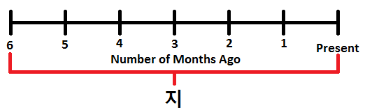

Vocabulary
Nouns:
택배 = delivery
The pronunciation of this word is closer to “택빼”
Common Usages:
택배로 보내다 = to send something via delivery
Examples:
택배가 언제 올지 모르겠어요 = I don’t know when the delivery will come
장모님께 선물을 직접 드리고 싶었는데 우리가 만나지 못하기 때문에 택배로 보내야겠어요
= I wanted to give my mother in law a present in person, but we didn’t meet, so I have to mail it to her
가격 = price
Common Usages:
가격표 = price tag
가격을 내리다/인하하다 = to lower prices
가격을 올리다/인상하다 = to raise prices
가격을 깎다 = to cut prices
가격을 비교하다 = to compare prices
Examples:
가격을 확인해보자 = Let’s check the price
이 뷔페가격은 음료수를 포함한 가격이에요 = This buffet price includes drinks
이 셔츠에 가격표가 없기 때문에 얼마인지 몰라요 = I don’t know how much this shirt is because there is no price tag
용돈 = allowance
The pronunciation of this word is closer to “용똔”
Common Usages:
용돈을 주다/받다 = to give/receive allowance
용돈이 떨어지다 = for one’s allowance to run out
Examples:
용돈을 얼마나 줘야 줄지 모르겠어요 = I don’t know how much allowance I should give
저는 제 친구용돈의 ½(반)만큼 받아요 = I get half the amount of allowance as my friend
아르바이트 = part-time job
Notes: The word “알바” is slang for 아르바이트.
Most new words in Korean originate from English. However, 아르바이트 originates from German.
Common Usages:
아르바이트를 구하다 = to get a part-time job
Examples:
제가 구한 아르바이트가 좋은지 모르겠어요 = I don’t know if the job I found is good
돈이 없어서 아르바이트를 찾아야 돼요 = I must find a part-time job because I don’t have money
돈을 아르바이트로 조금씩 벌 수 있어요 = You can earn money little by little with a part-time job
이웃사람의 애기를 아르바이트로 돌봐요 = I look after my neighbor’s baby as a part-time job
빛 = a light
The pronunciation of this word is closer to “빋”
Notes: This word refers to the actual noun of light – as in, the (usually) invisible light that shines. This word is not used to refer to the thing that emits light (which we also refer to as a “light” in English). The word for a “light” that emits light would be “불” or “조명”
Common Usages:
햇빛 = sun light
달빛 = moonlight
빛을 발하다/내다 = to emit light
Examples:
이 빛이 충분히 밝은지 모르겠어요 = I don’t know if this light is bright enough
빛의 색깔은 주파수에 달려 있어요 = The color of light is different depending on the wavelength
햇빛이 너무 세서 로션을 바르세요 = Put some lotion on because the sunlight is really strong
시인 = poet
Examples:
저는 시인이 되려고 노력하고 있어요= I am trying to become a poet
그 사람은 유명한 시인이에요 = That person is a famous poet
주제 = subject
Common Usages:
주제를 바꾸다 = to change the subject
Examples:
올해 국제토론의 주제가 뭐예요? = What is the subject of this year’s international debate?
논문의 주제를 정하는 것이 제일 어려워요 = It is most difficult to choose the topic of your thesis
에세이의 주제를 새로운 주제로 바꿔야 될 것 같아요
= You probably need to change the subject of your essay to a new one
그것을 부장님이랑 얘기했을 때 그 주제를 꺼내고 싶지 않았어요
= When I was talking with the boss I didn’t want to bring that subject up
그룹 = group
Examples:
각 그룹마다 다른 곳에 가서 그 지역의 특산물을 먹을 거예요
= Each group will go to a different place and eat that area’s specialty (food)
선생님은 학생들을 작은 그룹으로 나눠서 교재를 주었어요
= The teacher separated the students into small groups and gave out teaching materials
요금 = fare, price
Common Usages:
전기요금청구서 = electricity bill
기본요금 = basic fare
요금을 내다 = to pay a fare
Examples:
요금을 어떻게 내요? = How can I pay the fare?
버스 요금이 다음 달에 100원으로 내릴 거예요 = The bus fare will decrease by 100 won next month
위치 = position, location
Common Usages:
현위치 = current location (usually on a map to say “YOU ARE HERE”)
Examples:
너(의) 위치가 어디야? = Where are you?
그 학교의 위치가 안 좋아요 = The location of that school isn’t good
제가 그 가게에 가고 싶은 이유는 싼 가격 때문이 아니라 위치가 가깝기 때문이에요
= The reason I want to go to that store isn’t because of the cheap prices but because it is close by
해안 = the coast
Notes: 해안 usually refers to the general area near the coast, whereas 해변 usually refers to the beach.
Common Usages:
해안(도)로 = a coastal road
Examples:
해안까지 어떻게 가는지 물어봤어요 = I asked how to get to the beach/coast
바람은 해안에서 제일 세게 불어요 = The wind blows strongest at the coast
저는 이번 연휴에 해안에 갈 거예요 = I am going to go to the coast for this vacation/long weekend
가정 = family
Notes:
가족 is usually used when referring to the members of the family, but 가정 is more about the family as a whole and the interconnected relationships that make up the family. A good example is how it is used in the word 가정파괴자 (or 가정파괴범). This refers to the person who “broke” the family (a home-wrecker, I guess). Here, the home-wrecker didn’t break the individual members of the family, but broke the family as a whole and the relationships within it.
Examples:
슬기는 행복한 가정에서 자랐어요 = Seulgi grew up in a happy family
재료 = materials, ingredients
Common Usages:
재료비 = the cost of materials/ingredients
재료가 신선하다 = for the ingredients to be fresh
Examples:
재료를 어떻게 섞어요? = How can I mix the ingredients?
음식을 좀 만들게 재료를 사와 = Buy some ingredients so that I can make some food
엄마가 무슨 재료를 쓰고 있는지 모르겠어요 = I don’t know what ingredients mom is using
선생님이 내일부터 실험을 할 건데 재료가 뭐 필요해요?
= You are going to be doing an experiment starting from tomorrow what (ingredients) do you need?
사람들이 김치를 만드는 데 많은 재료가 필요해요
= For people to make kimchi, a lot of ingredients are needed
자유 = freedom
Common Usages:
자유롭다 = to be free
자유형 = freestyle (for example, in swimming)
자유인 = a free person
Examples:
3년 동안 저의 자유가 뺏겼었어요 = My freedom had been taken away for 3 years
한국 고등학생들은 자유가 전혀 없습니다 = Korean high school students don’t have freedom at all
딸을 키우면 제일 중요한 것은 딸한테 자유를 주는 것이에요 = If you have a daughter, the most important thing is to give her freedom
책임 = responsibility
Common Usages:
책임자 = the person responsible (the person in charge)
책임감 = the feeling of responsibility
책임을 맡다 = to take the responsibility of something
책임을 맡기다 = to give responsibility to someone
Examples:
그것은 저의 책임이 아니에요 = That is not my responsibility
회사에 저는 책임이 너무 많습니다 = I have too much responsibility at my company
저는 이 부의 책임자와 얘기하고 싶어요 = I want to speak with the person in charge of this department
입구 = entrance, way in
Notes: It is common to refer to the subway station (or general area) of a university by the university name (or sometimes the first syllable of the University name) followed by “~입구.” For example:
홍대입구역 = Hongdae Univesity Station
건대입구역 = Konkuk University Station
서울대입구역 = Seoul National University Station
Common Usages:
출입구 = entrance and exit
비상출입구 = emergency exit/entrance
Examples:
입구가 멀기 때문에 다른 곳으로 갈 거예요
= I’m going to go to another place because the entrance is too far
모든 영화관에는 비상상황을 대비해 다섯 개 이상의 입구가 있어야 해요
= In every movie theatre, to prepare for an emergency situation, there must be more than five exits/entrances
사람들이 대통령이 그 건물에 계시는 것을 알아서 그 건물 입구에 다가갔어요
= People knew that the president is in that building, so they approached the entrance
하지만 펭귄이 있는 곳은 동물원 입구에서 멀다고 하니 아빠와 나는 우선 다른 동물들을 먼저 봤다 =
But (because) the place the penguins are was said to be far from the zoo entrance, so Dad and I saw other animals first
출구 = exit , way out
Notes: As this word refers to the exit of places, it is used to designate the specific exit numbers of subway stations in Korean. For example:
2번 출구 = Exit 2
3번 출구 = Exit 3
Common Usages:
비상탈출구 = emergency exit
Examples:
사당역 4번 출구에서 만나자 = Let’s meet at exit four of Sadang station
비상출구를 찾아 볼 거예요 = I will (try to) look for the emergency exit
출입 = enter and exit
Notes: 출입 refers to both actions of entering and exiting a place (like a building or a door or something like that). As a noun, it is often found before another noun describing that something is related to ‘entering and exiting.’ For example:
출입구 = doorway, place where one can exit/enter
출입문 = doorway, place where one can exit/enter
출입국사무소 = immigration office (the office of entering and exiting the country)
It is also commonly used before ‘금지’ to have a meaning similar to “do not enter.”
출입 금지 = do not enter
As a verb, it refers to the action of entering and exiting. For example:
여기에 출입하고 싶으면 회원카드를 보여줘야 돼요 = If you want to enter (and eventually exit), you need to show your membership card
수술 = surgery, operation
Common Usages:
수술을 받다 = to get surgery
성형수술 = plastic surgery
Examples:
수술을 받으러 서울에 갔어요 = I went to Seoul to get surgery
수술을 받을지 확실하지 않아요 = It is not certain if I will get surgery
어제 한 수술 때문에 저의 몸 전체가 너무 아파요
= Because of the surgery I had yesterday, my entire body is sore
그 수술을 받았을 때 저의 엄마는 저를 걱정했어요
= When I got that surgery, my mom was worried about me
훈련 = training
The pronunciation of this word is closer to “훌련”
Common Usages:
훈련을 받다 = to get/receive training
화재대피훈련 = a fire drill
훈련시키다 = to train
Examples:
군인들은 눈을 감고 총을 쏠 수 있도록 훈련을 받았다 = The soldiers trained to the extent that they could shoot guns with their eyes closed
비상 = emergency
Notes: This word is usually used before some other noun to indicate that it is some sort of “emergency” version of that noun.
Common Usages:
비상시 = a time of emergency
비상구 = emergency door
비상문 = emergency door
비상탈출구 = emergency exit
비상사태 = state of emergency
Examples:
비상출입구가 어디 있는지 찾았어요 = We found where the emergency exit is
비상시에 문을 양쪽으로 열 수 있습니다 = In a time of emergency, you can open the door both ways
지진이 생긴 후에 네팔 전국은 비상 사태였어요 = After the earthquake, the whole country of Nepal was in a state of emergency
계단 = steps, stairs, staircase
Common Usages:
계단을 올라가다/올라오다 = to go/come up stairs
계단을 내려가다/내려오다 = to go/come down stairs
Examples:
예쁜 신부는 계단에서 내려왔어요 = The beautiful bride came down the stairs
달리기를 너무 많이 해서 계단을 올라갈 수 없어요 = I ran too much, so I can’t go up the stairs
계단을 내려가다가 넘어졌어요 = I fell while going down the stairs
전통 = tradition, culture, heritage
Common Usages:
전통 과자 = traditional candy
전통 음식 = traditional food
전통 가옥 = a traditional house
전통을 전하다 = to hand down tradition
Examples:
우리가 한국 전통 결혼식을 할 거예요 = We will have a traditional Korean wedding
그 농부가 쌀을 전통적인 방법으로 재배해요 = The farmer uses a traditional method to cultivate rice
친구가 한국에 오면 전통 음식을 먹고 싶대요 = My friend said that he wants to eat traditional Korean food when he comes to Korea
호선 = a subway line
Notes: A number is usually placed before 호선 to indicate a specific line of the subway. For example:
1호선 = line 1
2호선 = line 2
Examples:
2호선은 서울 도심 주위를 돌아요 = Line 2 circles around the downtown of Seoul
거기에 가려면 동대문역에서 4호선으로 갈아타면 돼요 = If you want to go there, you should transfer to line 4 at Dongdaemun station
기간 = a period of time
Common Usages:
보증기간 = warranty period
준비기간 = preparation period
유통기간 = expiration period (expiration date)
계약기간 = the period of a contract
접수기간 = application period (the period where we will be accepting applications)
Examples:
유통기간은 언제까지예요? = How long until the expiration date?
그 기간에 애기들이 언어를 배우는 것이 아주 중요해요
= That period is very important for babies to learn a language
여행을 가기 전까지 3일이 남아서 나는 그 기간을 어떻게 보낼지 생각해봤다
= Only three days remained until we were going traveling, therefore I thought about how I will spend my time during that period
구체적 = detailed, specific
Examples:
너의 목표는 너무 구체적이야 = Your goals are too specific
이 단어를 언제 쓸 수 있는지 구체적인 상황을 설명해 주세요 = Can you give me a specific situation when you would use this word?
Verbs:
꺼내다 = to take out, to remove something
Common Usages:
지갑에서 돈을 꺼내다 = to take out money from a purse/wallet
말/이야기/주제를 꺼내다 = to bring something up (in conversation)
Examples:
치킨을 냉장고에서 꺼내 주세요 = Please take the chicken out of the fridge for me
그 주제를 부장님이랑 얘기했을 때 그 주제를 꺼내고 싶지 않았어요
= When I was talking with the boss, I didn’t want to bring up that subject
산티아고는 가게 앞 길가에 쭈그리고 앉아 배낭에서 책 한 권을 꺼내 들었다
= Santiago sat/squatted in-front of the store and pulled a book out of his bag.
아빠가 엄마가 싸 준 도시락을 가방에서 꺼내 우리는 맛있게 먹었다
= Dad pulled the lunch box that mom packed out of the bag, and we (deliciously) ate lunch
전하다 = to convey, to deliver
Common Usages:
전해오다 = to pass down
Notes: This word can be used when handing something from one person to another. When used like this, the translation of “deliver” is usually appropriate. For example:
그 용돈을 아이에게 전해 주세요 = Please give/hand/deliver this allowance/money to the child
It is also used for “words” that are handed from one person to another. When used like this, the translation of “convey” is usually appropriate. For example:
그가 저에게 무슨 말을 전했는지 기억이 안 나요
= I don’t remember what that person told (conveyed to) me
거실을 깨끗하게 정리하고 엄마한테 진심으로 감사하다는 말을 전했다
= We organized the living room (cleanly), and thanked mom from the bottom of our hearts
정하다 = to set
Common Usages:
날짜를 정하다 = to set a date
가격을 정하다 = to set a price
장소를 정하다 = to set a location
목표를 정하다 = to set a goal
Examples:
우리가 이것을 언제 정했는지 모르겠어요 = I don’t know when we set it
우리는 결혼식 날짜를 아직 안 정했어요 = We still haven’t set a date for the wedding
아일랜드에 오기 전에 중국에 간 적이 있었는데, 그때는 모든 일정이 정해져 있는 패키지 여행이었다 = I had been to China before coming to Ireland, but at that time, it was a travel package tour where the schedule was set
줄이다 = to reduce, to decrease
The passive form of this word is “줄다” (to be reduced/decreased)
Common Usages:
크기를 줄이다 = reduce the size of something
규모를 줄이다 = to reduce the scale of something
양을 줄이다 = to reduce the amount of something
Examples:
정부가 외국인 선생님 예산을 왜 줄이는지 모르겠어요
= I don’t know why the government is decreasing the budget for foreign teachers
정부가 예산을 줄여서 우리가 회사원 한 명을 거의 해고해야 할 뻔 했어요
= We almost had to fire an employee because the government cut the budget
데려오다 = to bring a person (coming)
Notes: 데려가다 is also possible. It all depends on the relative location of the speaker and if the acting agent in the sentence is coming or going. For example:
저는 집에 친구를 데려갈 거예요 = I will bring a friend home
(“I” would have to be in a location other than “home” when this is said)
저는 집에 친구를 데려올 거예요 = I will bring a friend home
(“I” would have to be at “home” when this is said)
Examples:
그 사람을 왜 데려오는지 물어봤어요 = I asked him why he is bringing that person
그 예쁜 여자도 데려오면 안 돼요? = Can’t you please also bring that pretty girl?
데려가다 = to bring a person (going)
Notes: 데려오다 is also possible. It all depends on the relative location of the speaker and if the acting agent in the sentence is coming or going. For example:
저는 집에 친구를 데려갈 거예요 = I will bring a friend home
(“I” would have to be in a location other than “home” when this is said)
저는 집에 친구를 데려올 거예요 = I will bring a friend home
(“I” would have to be at “home” when this is said)
Examples:
친구를 데려가도 돼요? = Is it okay if I bring a friend?
막다 = to obstruct, to block
The pronunciation of this word is closer to “막따”
The passive form of this word is 막히다 (to be obstructed/blocked)
Common Usages:
귀를 막다 = to cover/block one’s ears
출입구를 막다 = to block the door/entrance/exit
막다 can be used when “blocking” a space, for example:
그 차가 길을 막고 있어요 = That car is blocking the street
It can also be used when “blocking” an object, for example:
물을 어떻게 막는지 알아요? = Do you know how to block the water?
허락하다 = to allow, to permit
The pronunciation of this word is closer to “허라카다”
The noun form of this word “허락” translates to “permission”
Common Usages:
허락을 청하다 = to ask for permission
허락을 받다 = to receive permission
Examples:
학생이 교무실에 허락 없이 들어갔어요 = The student went into the office without permission
보무님은 제가 12시까지 밖에 있는 것을 허락해 주셨어 = My parents let me stay out until 12:00
버리다 = to throw away
Notes: ~아/어 버리다 is added to some verbs to express the emotion that something was done and “thrown away” at the same time. The emotion is as if something was “thrown away” or done without any real thinking of the consequences. Some quick examples:
끄다= to turn off
꺼 버리다= to turn off (with that added emotion)
가다= to go
가 버리다= to go (with that added emotion)
잊다= to forget
잊어버리다= to forget (with that added emotion)
Examples:
그 셔츠를 언제 버렸는지 기억이 안 나요 = I don’t remember when I threw away that shirt
쓰레기를 갖다 버리세요 = Go (with the garbage in your hand) and throw it out
오늘 새로운 복사기가 올 거라서 이 오래된 것을 버려야 돼요 = The new photocopier will come today, so we have to throw out this old one
잊어버리다 = to forget
Notes: This is a combination of the word 잊다 with ~아/어버리다 added for the emotion that something was “thrown out”
Examples:
열쇠를 어디 두었는지 잊어버렸어요 = I forgot where I put my keys
친구 이름을 잊어버려서는 안 돼요 = You shouldn’t forget your friend’s name
그 전 여자 친구를 잊어버리려면 그녀가 전화할 때마다 무시하세요 = If you intend to forget that previous girlfriend, ignore all of her calls
벌다 = to earn
Examples:
그게 아니라 저는 돈을 벌어야 돼요 = It’s not that, I just need to earn money
배우들은 돈을 많이 벌어요 = Actors earn a lot of money
그때 돈을 얼마나 벌었어요? = How much money did you earn at that time?
기르다 = to raise (a child, pet), to cultivate (a plant)
Common Usages:
강아지를 기르다 = to raise a puppy
아이를 기르다 = to raise a child
야채를 기르다 = to cultivate (plant and then grow) vegetables
수염을 기르다 = to grow a beard
Examples:
제가 강아지를 기르고 싶은지 모르겠어요 = I don’t know if I want to raise a puppy
아이를 기르는 것이 매우 힘든 거예요 = Raising a child is a very difficult thing
조심하다 = to act carefully
Common Usages:
조심하세요! = Be careful!
조심히 가요! = Go carefully! (often said to people when they leave somewhere)
Examples:
뛰다가 조심하지 않았으면 넘어졌을 거예요
= If I wasn’t careful when I was running, I would have fallen
할아버지가 연세가 많으셔서 밖에 나가시면 조심하셔야 됩니다
= Grandpa is old, so when he goes outside, he should be careful
관리하다 = to manage, to administer
The pronunciation of this word is closer to “괄리하다”
The noun form of this word “관리” translates to “management/administration”
Common Usages:
관리비 = management fees
관리자 = manager/administrator
Examples:
이 일을 관리할 수 있는 사람을 구해야 돼요 = I need to find/hire a person to manage this work
우리 아파트 관리비가 한 달에 100,000 원이에요 = The management fee for our apartment is 100,000 won per month (for one month)
치료하다 = to treat, to cure
The noun form of this word (“치료”) translates to “treatment”
Common Usages:
치료비 = medical fees
병을 치료하다 = to treat a disease
치료를 받다 = to receive treatment
마음을 치료하다 = to cure one’s mind
Examples:
이 독을 마시면 치료할 수 없어요 = If you drink this poison, you cannot cure/treat it
상처를 치료를 했지만 아직 고통이 있어요 = I treated my wound, but there is still pain
수술을 받을지 그냥 약으로 치료할지 확실하지 않아요
= It is not certain if I will get surgery or just treat it with medicine
이 병이 나빠지는 것에 대해 많이 걱정해야 하는 정도는 아니지만 오늘부터 치료를 시작해야 됩니다
= The disease/sickness getting worse isn’t (to the extent that it is) something you need to worry about it, but we need to start treatment (from) today
이번 여행을 통해서 영국에서 내가 보고 싶었던 런던 구경도 하고, 해리포터 촬영지도 보고 마음을 치료하고 올 것이다. 오늘 하루 여행 준비를 하면서 너무 피곤했다.
= From this travel, in England, I will sightsee around the places I want to see in London, and also see the filming location of Harry Potter – (which will), and then cure my mind (re-charge myself) and then return. Today I was very tired because (while) I planned for my trip.
헤어지다 = to break up with a person
Common Usages:
여자/남자 친구와 헤어지다 = to break up with one’s boy/girlfriend
Examples:
저의 여자 친구는 저랑 헤어졌어요 = My girlfriend broke up with me
남자친구랑 내일 헤어져야겠다 = I guess I should break up with my boyfriend tomorrow
너를 좋아하지 않았으니까 헤어졌어 = I broke up with you because I didn’t like you
Passive Verbs:
줄다 = to be reduced, to be decreased
Translation: to be decreased, to be reduced
The active form of this word is “줄이다” (to decrease/reduce)
Examples:
회사가 돈이 없어서 월급이 줄었어요
= My company doesn’t have any more, so my (monthly) paycheque decreased
속도제한이 줄었으므로 운전을 하실 때 그 새로운 속도제한을 지키기 바랍니다
= The speed limit decreased, so when you drive, please make sure you follow the new speed limit
깨지다 = to be broken, cracked, smashed
Notes: This word is used when something is already broken. The verb used when a person breaks/cracks/smashes something is 깨뜨리다.
깨지다 can also be used when a relationship with somebody is broken
Common Usages:
유리가 깨지다 = for glass to be broken
접시가 깨지다 = for a plate to be broken
남자/여자 친구랑 깨지다 = to be broken up with a boy/girlfriend
Examples:
저는 어제 남자 친구랑 깨졌어요 = I broke up with my boyfriend yesterday
이 병이 깨지기 쉬워서 조심하세요 = Be careful because this bottle breaks easily
Adjectives:
쌀쌀하다 = to be chilly
Common Usages:
쌀쌀한 날씨 = chilly weather
Examples:
내일 날씨가 쌀쌀할지 모르겠어요 = I don’t know if tomorrow’s weather will be chilly
오늘 날씨가 쌀쌀하니까 따뜻한 신발을 신었어요 = The weather is chilly today, so I put on warm shoes
밝다 = to be bright
The pronunciation of this word is closer to “박따”
The verb form of this word (“밝히다”) translates to “to lighten something”
Common Usages:
귀가 밝다 = for one’s hearing to be good
눈이 밝다 = for one’s eyesight to be good
성격이 밝다 = to one’s personality to be bright (bubbly)
미래가 밝다 = for one’s future to be bright (promising)
Examples:
이 빛이 충분히 밝은지 모르겠어요 = I don’t know if this light is bright enough
역시 내 친구는 언제 봐도 항상 밝다 = My friend, regardless of when I see her, always looks good/bright
슬기가 사업을 해서 미래가 밝겠다 = Seulgi’s future is promising because she has a business
목마르다 = to be thirsty
The pronunciation of this word is closer to “몽마르다”
Notes: This literally translates to “for one’s throat to be dry.”
Examples:
목이 말라서 물을 갖다 주세요 = I’m thirsty, so please get me some water (and give it to me)
Introduction
Up to now, you have learned a lot (probably too much!) about using ~는 것 (or one of its derivatives) with a clause to describe an upcoming noun. For example:
내가 가고 있는 곳 = the place I am going
내가 만난 사람 = the person I met
내가 먹을 음식 = the food I will eat
In this lesson, you will learn about adding ~는지 to indicate that the preceding clause is a guess or something uncertain. Let’s get started.
A Clause of Uncertainty: ~는지
I didn’t know what title to give to “~는지,” but I came up with the “clause of uncertainty” which I feel describes it well. By placing ~는지 at the end of a clause, you can indicate that the clause is some sort of guess, question or uncertainty.
A common situation where there is uncertainty is when there is a question word in a sentence. For example:
저는 친구가 어디 가는 것을 몰라요
If we break that sentence down into more simple pieces, we get:
저는 (—) 몰라요 = I don’t know (—-)
What don’t you know? You don’t know the noun within the brackets:
저는 (친구가 어디 가는 것을) 몰라요
So the sentence reads:
저는 친구가 어디 가는 것을 몰라요 = I don’t know where my friend is going
However, because “친구가 어디 가는 것” is uncertain, ~는지 should be added to the clause instead of ~는 것. For example:
저는 친구가 어디 가는지 몰라요 = I don’t know where my friend is going
It is also worth pointing out here that the future tense ~겠다 is commonly added to 모르다 in these types of sentences. When 모르다 is used like this (as “모르겠다”), it does not have a future tense meaning. Rather, it is just a common (and slightly more polite) way to say that one “does not know something.” Therefore, it would be more common to see the sentence above written/spoken as:
저는 친구가 어디 가는지 모르겠어요 = I don’t know where my friend is going
You will continue to see “모르겠다” used instead of a present tense conjugation of 모르다 in the rest of this lesson and throughout your Korean studies.
By default, if a clause contains a question word (누구, 뭐, 언제, 어디, 왜, etc…) ~는지 is usually added due to the uncertainty that it contains. For example:
엄마가 누구랑 먹는지 모르겠어요 = I don’t know who mom is eating with
엄마가 뭐 먹는지 모르겠어요= I don’t know what mom is eating
엄마가 어디서 먹는지 모르겠어요 = I don’t know where mom is eating
엄마가 왜 먹는지 모르겠어요 = I don’t know why mom is eating
However, a question word does not need to be included in order to use ~는지. All that is needed is that there is uncertainty in the sentence. When there is no question word in a sentence that includes “~는지” the English word “if” is usually used. For example:
엄마가 지금 먹고 있는지 모르겠어요 = I don’t know if mom is eating now
Below are more examples. Also notice that the final word of the sentence does not need to be “모르다.” Any verb or adjective that makes sense along with the preceding uncertain clause can be used. For example:
그 사람을 왜 데려오는지 물어봤어요
= I asked him why he is bringing that person
비상출입구가 어디 있는지 찾았어요
= We found where the emergency exit is
해안까지 어떻게 가는지 물어봤어요
= I asked how to get to the beach/coast
엄마가 무슨 재료를 쓰고 있는지 모르겠어요
= I don’t know what ingredients mom is using
정부가 외국인 선생님 예산을 왜 줄이는지 모르겠어요
= I don’t know why the government is decreasing the budget for foreign teachers
학생들은 선생님들이 돈을 얼마나 버는지 몰라요
= Students don’t know how much money teachers earn
저는 그 학생이 어느 대학교를 다니는지 기억(이) 안 나요
= I don’t remember which university that student attends
Past tense:
The same concept can be used to indicate a guess, question or uncertainty in the past tense. In order to express this, ~았/었 should be added to the verb at the end of the uncertain clause, followed by ~는지. For example:
저는 엄마가 왜 먹었는지 모르겠어요 = I don’t know why mom ate
저는 엄마가 뭐 먹었는지 모르겠어요 = I don’t know what mom ate
저는 엄마가 언제 먹었는지 모르겠어요 = I don’t know when mom ate
저는 엄마가 어디서 먹었는지 모르겠어요 = I don’t know where mom ate
저는 엄마가 밥을 먹었는지 모르겠어요 = I don’t know if mom ate
The form above (using ~았/었는지) is officially correct in Korean. However, in speech, it is very common to hear ~ㄴ/은지 being used instead. For example:
저는 엄마가 왜 먹은지 모르겠어요 = I don’t know why mom ate
저는 엄마가 뭐 먹은지 모르겠어요 = I don’t know what mom ate
저는 엄마가 언제 먹은지 모르겠어요 = I don’t know when mom ate
저는 엄마가 어디서 먹은지 모르겠어요 = I don’t know where mom ate
저는 엄마가 밥을 먹은지 모르겠어요 = I don’t know if mom ate
There really isn’t any difference between the two sets of sentences, especially in speech. Both sets of sentences sound natural to a Korean speaker. However, the correct grammatical form is to use ~았/었는지, and the use of ~ㄴ/은지 is more used in spoken Korean.
Other examples:
그 셔츠를 언제 버렸는지 기억이 안 나요 = I don’t remember when I threw away that shirt
열쇠를 어디 두었는지 잊어버렸어요 = I forget where I put my keys
우리가 이것을 언제 정했는지 모르겠어요 = I don’t know when we set it
그가 저에게 무슨 말을 전했는지 기억이 안 나요 = I don’t remember what that person told me (conveyed to me)
Future tense:
The same concept can be used to indicate a guess, question or uncertainty in the future tense. In order to express this, ~ㄹ/을 should be added to the verb at the end of the uncertain clause, followed by ~지. For example:
택배가 언제 올지 모르겠어요 = I don’t know when the delivery will come
용돈을 얼마나 줄지 모르겠어요 = I don’t know how much allowance I should give
오후에 비가 올지 모르겠어요 = I don’t know if it will rain in the afternoon
수술을 받을지 확실하지 않아요 = It is not certain if I will get surgery
내일 공원에 갈지 모르겠어요 = I don’t know if I will go to the park tomorrow
내일 영화를 볼지 모르겠어요 = I don’t know if I will see a movie tomorrow
When the uncertain clause doesn’t have a question word in it, it is common to use the word “might” in the English translation. For example
오후에 비가 올지 모르겠어요 = It might rain in the afternoon tomorrow
수술을 받을지 모르겠어요 = I might get surgery
내일 공원에 갈지 모르겠어요 = I might go to the park tomorrow
내일 영화를 볼지 모르겠어요 = I might see a movie tomorrow
English speakers are often confused about how the same Korean sentence can seemingly translate to different things in English. My answer is: They don’t translate to different things. The Korean usage of “~ㄹ/을지 몰라요” just indicates that something may or may not happen. Both translations above (“I don’t know if” and “might…”) indicate that something may or may not happen. Remember that sometimes it is difficult to translate a Korean sentence perfectly into English. As such, I always suggest that you understand the general meaning of the Korean sentence, and try to focus less on the given English translations. The nuance of using “~ㄹ/을지 몰라요” can translate to many things in English, all which (as a result of being a completely different language) cannot perfectly describe this nuance.
Using ~는지 with Adjectives
It is also possible to attach ~는지 to an uncertain clause that is predicated by an adjective. However, instead of adding ~는지, ~ㄴ/은지 should be added. Notice that the difference in ~는지 and ~ㄴ/은지 is the same as the difference when attaching ~는 or ~ㄴ/은 to verbs and adjectives to describe an upcoming noun. For example:
먹는 것
가는 것
행복한 것
밝은 것
Below are some examples of ~ㄴ/은지 being used with adjectives:
제가 준 것이 괜찮은지 모르겠어요 = I don’t know if the thing that I gave is good
이 빛이 충분히 밝은지 모르겠어요 = I don’t know if this light is bright enough
제가 구한 아르바이트가 좋은지 모르겠어요 = I don’t know if the job I found is good
제가 가져온 자료가 충분한지 모르겠어요 = I don’t know if I brought enough materials
제가 강아지를 기르고 싶은지 모르겠어요 = I don’t know if I want to raise a puppy
그 책이 얼마나 긴지 모르겠어요 = I don’t know how long that book is
To use this form with adjectives in the past or future tenses, you can add the same thing as with verbs. For example:
그 시대가 그렇게 길었는지 깨닫지 못했어요 = I didn’t realize that era was so long
그 일이 힘들지 모르겠어요 = I don’t know if that work will be difficult
내일 날씨가 쌀쌀할지 모르겠어요 = I don’t know if tomorrow’s weather will be chilly
If… or not…
In all of the above examples, only one situation is indicated in the sentence. It is possible to indicate more than one situation by using more than one verb or adjective connected to ~는지 in the sentence. The simplest way to do this is to include the opposite situation, followed by ~는지. For example:
내일 영화를 볼지 안 볼지 모르겠어요 = I don’t know if I will see a movie tomorrow or not
수술을 받을지 안 받을지 확실하지 않아요 = It is not certain if I will get surgery or not
그가 제 말을 들었는지 안 들었는지 모르겠어요 = I don’t know if he was listening to me or not
저는 엄마가 밥을 먹었는지 안 먹었는지 모르겠어요 = I don’t know if mom ate or not
제가 구한 아르바이트가 좋은지 안 좋은지 모르겠어요 = I don’t know if the job I found is good or not
When you are dealing with non-하다 verbs (like 먹다), you need to write out the verb again to indicate “I don’t know if mom ate or not.” However, when dealing with 하다 verbs, the sentence can usually be shortened by eliminating the word before ~하다 when you say the verb the second time. For example, instead of saying:
저는 엄마가 공부했는지 안 공부했는지 모르겠어요
You could just say:
저는 엄마가 공부했는지 안 했는지 모르겠어요 = I don’t know if mom studied or not
Remember that Korean people love shortening their sentences, and taking out the redundant “공부” the second time around is more natural in Korean.
In all of the above examples, two possibilities are listed, and the speaker is indicating that he/she doesn’t know which one will happen amongst the two. The examples above simply use the positive and negative outcomes of the same situation. It is also possible to list two (or more) outcomes that are unrelated to each other. For example:
내일 공원에 갈지 영화를 볼지 모르겠어요
= I don’t know if I will see a movie or go to the park tomorrow
제가 구한 아르바이트가 좋은지 나쁜지 모르겠어요
= I don’t know if the (part-time) job I found is good or bad
수술을 받을지 그냥 약으로 치료할지 확실하지 않아요
= It is not certain if I will get surgery or just treat it with medicine
You can also use “~지” to form a question. For example, if you are asking somebody if they know how to do something. The most common word that finishes the sentence would be “알다.” For example, you can say:
서울에 어떻게 가는지 알아요? = Do you know how to get to Seoul?
그 단어를 어떻게 발음하는지 알아요? = Do you know how to pronounce that word?
그 학생이 책을 왜 버렸는지 알아요? = Do you know why that student threw out his book?
물을 어떻게 막는지 알아요? = Do you know how to block the water?
I call clauses with ~지 “clauses of uncertainty”, but that is just a name I gave it because it describes it well in most situations. There are times when “지” represents something certain. For example, the answers to those questions would be:
서울에 어떻게 가는지 알아요 = I know how to get to Seoul
그 단어를 어떻게 발음하는지 알아요 = I know how to pronounce that word
그 학생이 책을 왜 버렸는지 알아요 = I know why that student threw out his book
In those examples, “지” technically doesn’t represent something uncertain…. so why do we use “지?” In these cases, the use of the question word in the sentence makes it more natural to use “지” as the noun instead of “것.”
Also note that there is another way to say that one “knows how to do something” (which is more based on ability than knowing something). This other way is discussed in Lesson 85.
Attaching ~도 to ~지
It is common to find ~도 attached to ~지. Adding ~도 to ~지 can have two meanings:
1) To have the “too” or “also” or “either” meaning that ~도 usually has. For example:
저는 밥도 먹었어요 = I ate rice too
저도 밥을 먹었어요 = I also ate rice
저는 밥도 안 먹었어요 = I didn’t eat rice either
This first meaning of ~도 will be discussed in a later lesson. This usage is more about the use of ~도 and not really related to the usage of ~지. I will just show you one example sentence so you can understand what I mean:
문을 열지도 몰라요 = You don’t even know how to open the door
Let’s focus on the more ambiguous meaning of ~도, which will be talked about in #2:
2) To have very little meaning or purpose in a sentence. Look at the two sentences below:
내일 비가 올지 모르겠어요 = It might rain tomorrow
내일 비가 올지도 모르겠어요 = It might rain tomorrow
Assuming ~도 isn’t being added to have the meaning described in #1 above (which is possible), the use of ~도 does not really change the sentence. Same goes for these two sentences:
내일 공원에 갈지 모르겠어요 = I might go to the park tomorrow
내일 공원에 갈지도 모르겠어요 = I might go to the park tomorrow
For seven years, I’ve been curious about the specific nuance that ~도 adds to these types of sentences (again, assuming that ~도 is not the ~도 from #1 above). All of my research, all of my studying, and all of my exposure to the language has lead me to believe that they are essentially the same. I’ve always thought to myself – “they can’t be exactly the same… the ~도 must have some purpose… right?”
Recently, I had discussions with many people to try to better understand this nuance. I want to show you conversations I had with two people because I think it will not only help you understand how subtle this difference is, but it will also show you that even Korean people don’t really know what the difference is.
My first conversation was with a Korean person who is a fluent English speaker. Below is how our conversation went.
—————————————————————————————————————-
Me: Explain the difference in nuance that you feel between these two sentences:
내일 비가 올지 모르겠어요 = It might rain tomorrow
내일 비가 올지도 모르겠어요 = It might rain tomorrow
Her: The use of ~도 makes it seem like you don’t know if it will happen or not. It’s possible that it will happen, but it is also possible that it won’t happen.
Me: But isn’t that sort of implied in the first sentence as well?
Her: Technically yes, but it’s just two different ways to say the same meaning. It would be like saying “I don’t know if it will rain tomorrow or not” and “It might rain tomorrow.”
Me: I feel like that first sentence that you just said would be better written as
“내일 비가 올지 안 올지 모르겠어요.”
Her: Ah, yes. I feel like these two sentences mean exactly the same thing:
내일 비가 올지도 모르겠어요
내일 비가 올지 안 올지 모르겠어요.
I feel like the use of ~도 adds that extra nuance that something might happen or not.
—————————————————————————————————————-
After speaking with that person, I discussed this problem with a teacher who teaches Korean grammar to Korean high school students. I can only assume that her understanding of Korean grammar is excellent, although sometimes it is hard for somebody to understand the grammar of their own language. Either way, she cannot speak English and our entire conversation was in Korean. This is how it went:
—————————————————————————————————————-
Me: Explain the difference in nuance that you feel between these three sentences:
내일 비가 올지 모르겠어요
내일 비가 올지도 모르겠어요
내일 비가 올지 안 올지 모르겠어요
Her: The first two sentences are identical. In the third one, you are indicating the two possibilities of “it might rain” or “it might not rain.”
Me: I just talked with another Korean person, and she said that the use of “~도” in the second sentence sort of implies those two possibilities as well. She said that the second and third sentences had the same meaning. What do you think about that?
Her: I don’t feel that way when I hear it. I feel the first two are the same, and the third one is listing more possibilities.
——————————
So here I had two Korean people – one with excellent English and the other with a lot of Korean grammar knowledge, and they gave me opposing answers. My conclusion from this and all of my studying, researching and exposure to the language is:
~ㄹ/을지 모르다 and
~ㄹ/을지도 모르다
Have the same, or effectively the same meaning.
Let me take a minute to explain when you would use ~도 in this case.
~도 is added to uncertain clauses that are conjugated in the future tense to express one’s uncertainty of if something will happen in the future (or not). You will typically not see ~도 added to an uncertain clause in the past or present tense unless it is being used to have the meaning as discussed in #1 above.
~도 is not added to uncertain clauses where there is a question word in the clause. For example, it would be unnatural to say something like this:
비가 언제 올지도 모르겠어요
This “rule” leads me to believe that the purpose of ~도 is somewhat closer to having the “if or not” meaning as it was described by the English speaking Korean person in our conversation. Just like how adding “or not” would be unnatural to add to the following English sentence, it would be unnatural to add “~도” to its Korean translation:
비가 언제 올지도 모르겠어요 = I don’t know when it will rain or not
Again, this usage is not the usage of ~도 from #1 above. In that usage, ~도 can be added to ~는지, ~았/었는지 or ~ㄹ/을지 to have the meaning that ~도 usually possesses when it is added to nouns. It can also be added to uncertain clauses that have question words. I will discuss this meaning in a future lesson.
Wow. All of that work to understand one syllable.
We’re not done yet. That syllable (지) has another meaning… one that is easier to dissect.
I have been doing X for Y – 지
Up to this point, this lesson has explained the meaning of ~는지 as a grammatical principle that is attached to its previous clause. For example:
저는 친구가 어디 가는지 모르겠어요 = I don’t know where my friend is going
When ~는지 is added to 가다, notice that there is no space between 가다, ~는 or 지. In this usage, ~지 is not a noun but instead just a part of a larger grammatical principle that can be attached to verbs or adjectives.
지 has another meaning, and it is completely unrelated to the meaning of ~지 that was described earlier in this lesson. I would like to talk about this other meaning in this lesson as well.
In this other meaning, you will see ~지 used after a verb with ~ㄴ/은 attached to the verb.
Notice that ~ㄴ/은 is the same addition that is added to verbs in the past tense of ~는 것
For example, you will see:
사귀다 + ㄴ/은 지 = 사귄 지
먹다 + ㄴ/은 지 먹은 지
I want to take a moment to explain what you are seeing here.
Remember that ~ㄴ/은 (just like ~는 in the present tense and ~ㄹ/을 in the future tense) is added to verbs when they will describe an upcoming noun. For example:
우리가 먹은 밥 = The food we ate
우리가 먹는 밥 = The food we eat
우리가 먹을 밥 = The food we will eat
In this same respect, 지 is also a noun. However, this is the type of noun that I like to call a “pseudo-noun.” These are nouns that can be described by a verb (using ~는 것) or by an adjective (just like any other noun), but they can’t be used on their own.
You will eventually learn more of these nouns in your Korean studies. Below are some of the pseudo-nouns that you will come across shortly:
적 in ~ㄴ/은 적이 없다 | Introduced in Lesson 32
(For example: 그것을 한 적이 없어요 = I haven’t done that)
수 in ~ㄹ/을 수 있다 | Introduced in Lesson 45
(For example: 그것을 할 수 있어요 = I can do that)
줄 in ~ㄹ/을 줄 알다 | Introduced in Lesson 85
(For example: 그것을 할 줄 알아요 = I know how to do that)
Let me explain the situation where you can use the pseudo-noun “지.”
Again, when placed after a verb with ~ㄴ/은 attached:
사귄 지
먹은 지
… and when followed by an indication of time:
사귄 지 6개월
먹은 지 5분
… and then followed by 되다 conjugated to the past tense:
사귄 지 6개월 됐다
먹은 지 5분 됐다
Remember, 지 is officially a noun. Nouns have meaning. The meaning of “지” is the representation of the period of time that has passed since the action took place until the present. To English speakers, it is hard to imagine that a noun represents a figurative period of time like this. This is the image I have in my head that represents the meaning of “지” in the construction “사귄 지 6개월 됐다:

Let’s put this construction into a sentence and look at how this could be translated.
여자 친구랑 사귄 지 6개월 됐어
Possible translations for this could be:
= I have been going out with my girlfriend for six months
= It has been six months since I started/have been going out with my girlfriend
Let’s look at another example – specifically one that illustrates the importance of context when understanding these sentences:
밥을 먹은 지 5분 됐다
Imagine you are eating, and your friend walks into the room and witnesses you eating. If your friend asks “how long have you been eating?” you could respond with:
밥을 먹은 지 5분 됐다
= I have been eating for five minutes
= It has been five minutes since I started/have been eating
However, imagine you are not eating, and your friend walks into the room and witnesses you not eating. If your friend asks “how long has it been since you last ate? (How long has it been since you have not been eating?)” you could respond with the same sentence used above. Remember, “지” represents the time period from when the action took place until the present. It’s possible that the action is still occurring, but it’s also possible that the action has stopped. In the context where the action has stopped, and where one wants to indicate how long it has been since something last occurred, the Korean sentence can be the same as the context where the action is continuing. The Korean sentence may be the same, but the English translation would be different because of this context. For example, in response to your friend asking “how long has it been since you last ate?” you could respond:
밥을 먹은 지 5분 됐다
= I haven’t eaten for five minutes
= It has been five minutes since I last ate
That’s the explanation for 지. Before I get into some deeper discussion, let’s look at some examples to get you familiar with these types of sentences.
In the example sentences below, the translations are assuming that the action is still occurring, and thus, the speaker is referring to how long it has been since the action started.
한국에서 산 지 25년 됐어요
= I have been living in Korea for 25 years
= It has been 25 years since I started living in Korea
강아지를 기른 지 10년 됐어요
= I have been raising a dog for 10 years
= It has been 10 years since I started raising a dog
그 그룹이 훈련을 받은 지 다섯 시간 됐어요
= That group has been receiving training for 5 hours
= It has been 5 hours since that group started receiving training
이 아르바이트를 한 지 2 주일 됐어요
= I’ve had this part-time job for 2 weeks
= It has been 2 weeks since I started this part-time job
한국에 온 지 2년 됐어요
= I have been in Korea for 2 years
= It has been 2 years since I came to Korea
————————-
Let’s discuss some things.
I already discussed the idea that “지” in the sentence “밥을 먹은 지 5분 됐다” can be used to refer to the amount of time that has passed (to the present) since one started eating, or since one finished eating. You would have to rely on context to know specifically which translation would work best.
This possibility of two meanings can only be applied to certain verbs. For example:
밥을 먹은 지 5분 됐다
This can be used to mean:
= I have been eating for five minutes (in the case that you are currently eating), or
= It has been five minutes since I last ate (in the case that you are currently not eating)
However, let’s go back to the first sentence we created using 지:
여자 친구랑 사귄 지 6개월 됐어
As you have seen, this sentence can be used to have the following meaning:
= It has been six months since I started/have been going out with my girlfriend
For the translation above to work, you would have to still be going out with your girlfriend. However, if you are currently not going out with your girlfriend, you would not be able to use this sentence. That is, the sentence above could not translate to “It has been six months since I was going out with my girlfriend.” In order to create that sentence, you would have to use the opposite verb, for example:
여자 친구랑 헤어진 지 6개월 됐어 = It has been six months since I broke up with my girlfriend
Likewise, look at the following sentence with the translations provided:
이제 결혼한 지 1년 됐어요
= I have been married for one year
= It has been a year since I got married
The sentence above would be used if you are currently married, but not if you are not currently married.
In trying to understand which verbs can hold this dual meaning – my brain keeps trying to tell me that it is related to whether or not the verb is able to repeat or continue itself. For example, when you eat, the act of eating is not one instant, and the action continues to progress.
–
When you exercise, the act of exercising is not one instant, and the action continues to progress. If you are exercising hard and look very sweaty, your friend might ask you “how long has it been since you started exercising?” In response, you could say:
운동한 지 한 시간 됐어요
= I have been exercising for one hour
= It has been one hour since I started exercising
However, if you just came home and threw your exercise bag on the couch, your friend might ask you “how long has it been since you last exercised (or stopped exercising)?” In response, you could again say:
운동한 지 한 시간 됐어요
= I haven’t exercised in an hour
= It has been an hour since I stopped exercising
–
When you shower the act of showering is not one instant, and the action continues to progress. If you are in the shower, your friend might ask you “how long it has been since you started showering?” In response, you could say:
샤워한 지 10분 됐어요
= I have been showering for 10 minutes
= It has been 10 minutes since I started showering
However, if your friend gets a whiff of your armpit and finds it to be very stinky, your friend might ask you “how long has it been since you last showered?” In response, you could again say:
샤워한 지 10분 됐어요
= I haven’t showered in 10 minutes
= It has been 10 minutes since I stopped showering
–
However, some words don’t continue to progress. For example, 결혼하다 refers to the act of getting married, not the state of being married. It doesn’t start or stop – it just happens. As such, if I were to say:
이제 결혼한 지 1년 됐어요
You would have to still be married to say that sentence. You never “started” getting married. You never “stopped” getting married. You just got married, and “지” represents the time from that point until the present.
This can also be applied to the word “오다,” which you already saw in an example sentence earlier:
한국에 온 지 2년 됐어요
= I have been in Korea for 2 years
= It has been 2 years since I came to Korea
In this case, 오다 refers to the (completed) action of arriving in Korea. It doesn’t start, and it doesn’t finish. It just happens, and “지” represents the time from that point to the present. Thus, you would have to still be in Korea to say that sentence.
Another example would be the word “졸업하다” (to graduate):
고등학교를 졸업한 지 1년 됐어요
= I graduated one year ago
= It has been a year since I graduated
You would have had to have graduated to say that sentence. You never “started” graduating. You never “stopped” graduating. You just graduated, and “지” represents the time from that point until the present.
The good news is – it is never this complicated in real conversations. The only reason why this is getting so complicated is because the sentences I’m providing don’t have any context. In everyday conversations, it is much easier to pick up the meaning using other information. In addition, it is also possible to specifically indicate that it has been a certain amount of time since an action finished. In order to do this, you can describe “지” with a negative sentence. For example:
우리가 안 만난 지 2주일 됐어요 = We haven’t met in 2 weeks
밥을 안 먹은 지 아홉 시간 됐어요 = I haven’t eaten in nine hours
용돈을 안 받은 지 1년 됐어요 = I haven’t received (an) allowance in a year
————————-
지 refers to the period of time from when an action occurs until the present. You cannot use 지to refer to a time that completed some other time in the past. If you want to indicate the period of time that an action occurred in the past, you can use sentences like this:
저는 두 시간 동안 먹었어요 = I ate for two hours
English speakers will quickly point out that “I ate for two hours” and “I had eaten for two hours” do not have exactly the same meanings. Korean people usually don’t distinguish between these two meanings in their sentences and instead rely on context to make the specific meaning clear.
————————-
You can also use this same type of sentence to ask questions about how long one has been doing something by using 얼마나 or words like 오래. For example:
한국어를 공부한 지 얼마나 되었어요? = How long have you been studying Korean?
운동한 지 오래 됐어? = Have you been exercising for a long time?
It is common to use the construction “얼마 안 되다” to indicate that you haven’t been doing something for very long. For example
제가 한국에서 산 지 얼마 안 됐어요 = I haven’t been living in Korea for very long
제가 우리 학교에서 일한 지 얼마 안 됐어요 = I haven’t been working at our school for very long
You also saw in Lesson 28 that this is one of the acceptable times where ~은 can be added to 있다. For example:
여기에 있은 지 얼마나 되었어요? = How long have you been here for?